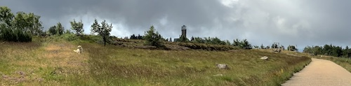
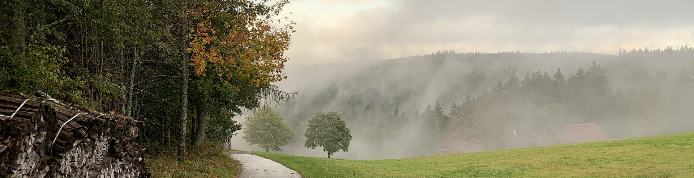

The Westweg trail is located in Southern Germany. The starting point
is on the Norhern border of the German Black Forest in the city of
Pforzheim, called "The Golden City". Pforzheim once got this name
because in Pforzheim Jewellery has been the main industry for decades.
After having gone south for several miles, one will enter the Black Forest.
You will cross the whole low mountain range and climb up to heights of
1000 - 1500 meters. You will climb on top of the mountains 'Belchen',
'Blauen' and of course the 'Feldberg'. The 'Feldberg' is the highest mountain with
a height of 1.496 meters. In the end, after 14 stages, you will arrive
in Swizerland by entering the city of 'Basel'.
Trail Stages
Trail Stage 1: Pforzheim - Dobel
Trails Stage 2: Dobel - Forbach
Other Stages: [...]

High swamp in trail stage 4...
Scenery
The scenery is beautiful. You will get astonishing views
about the Rhine area and the Black Forest all along the way.
The Westweg Trail is famous for its views.

End of trail stage 7: View in the scenery after a rainy day...
Infrastructure
There are several resting places along the way. From time to time,
you will see banks made of wood, made for hikers, where you can lay
down and enjoy the scenery while having a rest.
On most stages there will be at least one possibility to have lunch
in a restaurant, however be prepared that there are stages where this
opportunity is missing. So you should take care for your lunch package
in advance!
Author
Quirly
Life long fan of nature and grown up in the Black Forest area. Hiked the first half of the Westweg in 2019, to be continued in 2021.
"Jobs fill your pockets, adventures fill your soul!"